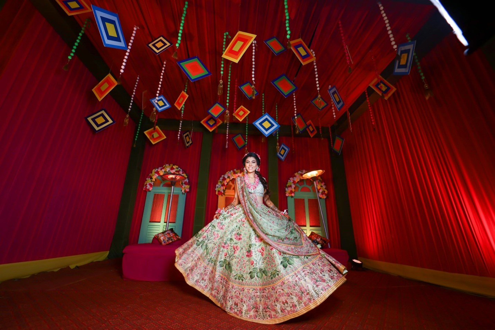

Explore the Latest Wedding Trends
Planning a wedding today means balancing cherished traditions with fresh, personalized ideas that make every ceremony special. At WedyApp, we bring you insights into the latest wedding trends, helping you infuse your big day with style, meaning, and unforgettable moments. From cutting-edge decor themes and intimate ceremonies to fashion-forward attire and creative photography, we've got you covered.

Modern Wedding Decor Ideas
Modern wedding decor emphasizes personality and creativity through minimalist yet purposeful designs. Venues feature industrial-chic elements like Edison bulbs, geometric centerpieces, and custom neon signs, while interactive touches, such as succulent living walls doubling as photo backdrops, add visual and sustainable appeal. Seasonal and eco-conscious decor, including upcycled wood, vintage mirrors, and potted plants, reflects environmentally friendly values. Sentimental details like family heirlooms or handmade crafts make each celebration uniquely personal.
Intimate and Private Ceremonies
Weddings are shifting toward intimate micro-weddings with under 50 guests, offering a more personal and meaningful experience. These smaller gatherings feature unique touches like personalized vows, family-led blessings, and interactive moments. Venues range from cozy vineyards and mountain lodges to backyard settings adorned with string lights and candles. Dining focuses on curated experiences, such as multi-course meals, gourmet food trucks, or bespoke drink pairings, often complemented by personalized notes or favors for a warm, welcoming atmosphere.
Top Color Themes, Fashion, and Dress Codes for Weddings
Wedding trends blend tradition with innovation, featuring earthy tones, pastels, and neutrals like ivory and dusty blue, alongside bold options like emerald and burgundy paired with metallics. Bridal fashion embraces sleek silhouettes, modern fabrics like silk and satin, and playful details such as detachable overskirts, capes, and jumpsuits, while grooms experiment with tailored suits in unconventional colors like teal or blush. Guests are encouraged to match themed dress codes, adding bohemian accents like floral prints, flowing garments, or statement accessories to complement unique venues and styles.
Most Trendy Floral Arrangements
Wedding floral trends embrace natural, effortless designs with asymmetrical, wildflower-inspired arrangements featuring wild roses, dahlias, eucalyptus, and ferns. Eco-friendly options like seasonal blooms and potted plants, which guests can take home or repurpose, are gaining popularity. For dramatic impact, floral installations such as cascading ceiling blooms, ceremony arches, and aisle garlands create immersive settings, often blending fresh and dried flowers for added texture and longevity.
Photography Ideas
Wedding photography focuses on storytelling with candid moments, natural light, and first-look sessions capturing raw emotions. Drone shots provide stunning aerial views, while interactive photo booths, from vintage setups to 360-degree video, add fun and unique mementos. Technology enhances sharing through instant digital uploads, AI editing, and creative albums featuring video clips, voiceovers, and behind-the-scenes reels, making memories both beautiful and shareable.